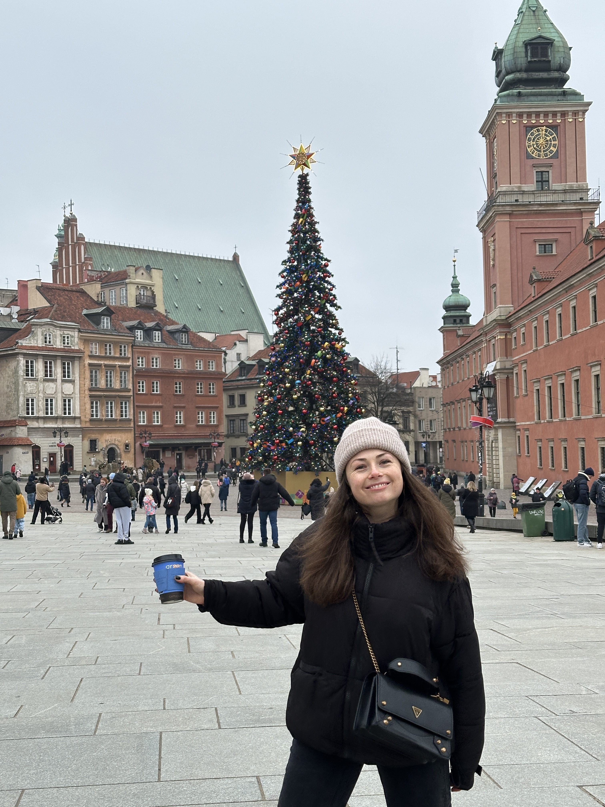

Hello! My name is Oksana Kyrylovets, and I am a beginner frontend developer. I am passionate about creating modern and interactive websites. I have experience working with HTML, CSS, and JavaScript, and I am constantly improving my skills and learning new technologies. My goal is to transform ideas into convenient and aesthetically pleasing web solutions. In my work, I value clean code, responsive design, and a creative approach. I am open to new challenges and ready to create amazing projects together with you!